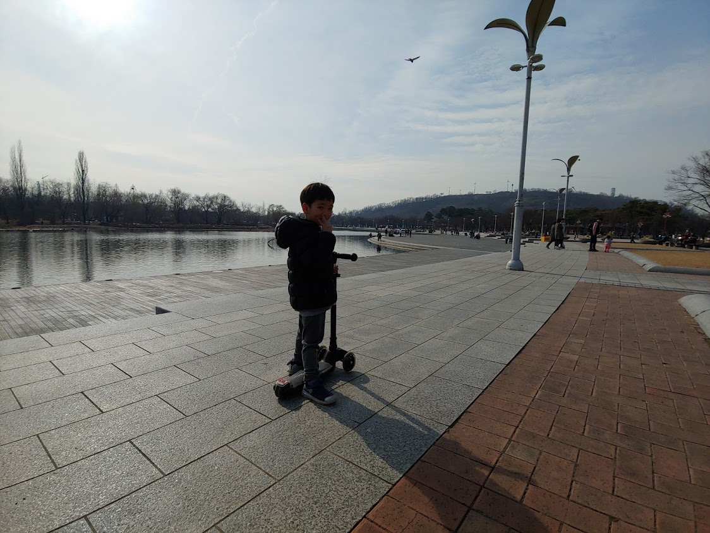

우리집 식구를 소개합니다.
김선재는 귀여운 우리집 어린이입니다. 선재는 달리기도 잘 하고 재미있는 생각도 많이 합니다. 정말이에요.
선재는 유치원을 다니고 있습니다. 라온반이에요. 형님반이라고 할 수 있죠. 선재의 유치원에서 즐겁게 생활하고 있는지 궁금하네요. 무언가 매일 하고 있는 것 같지만 저도 완전히 알 수는 없어요. 다른 가족들도 알 수 없는 생활이 앞으로 점점 더 늘어나겠죠.
오늘 보니까 선재는 킥보드를 아주 잘 타더라고요. 추워서, 또 미세먼지가 나빠서 많이 나가 놀지 못했었는데, 덥다고 또 못 나가기 전에 밖에서 많이 놀아줘야겠습니다.